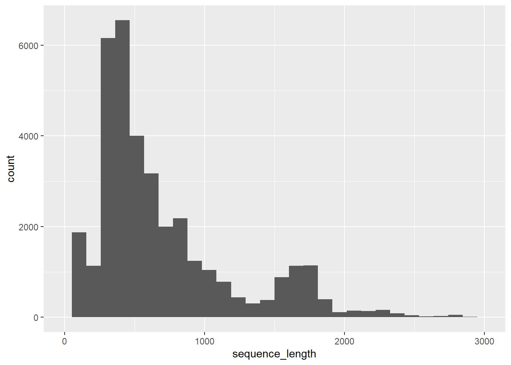

source(here::here("R",'PR2_init.R'), echo=FALSE)PR2 version 5.0.0
Adding New GenBank sequences
Instructions to add new Genbank sequences
- Do a query using genbank_search query
- Filter for sequences not present in PR2
- Save as an rds file
- Move rds to Roscoff server and run script called script_genbank_xml.R using sbatch_genbank.sh
- Get the metadata and sequences
- Get the features
- Move metadata and features result file to local directory
- Run rest of script to filter the data and save as an Excel file
- If find features files then only get the rRNA part
Init
Read pr2_main
Only need to get pr2_main$gb_accession to find entries already in the database
pr2_db <- db_info("pr2_google")
pr2_db_con <- db_connect(pr2_db)
pr2_main <- tbl(pr2_db_con, "pr2_main") %>%
collect()
db_disconnect(pr2_db_con)[1] TRUESet up the files
pr2.env$editor <- "D. Vaulot"
full_path <- function(file_name){here::here("5.0", "C - New GenBank sequences", file_name)}
# create the directory for taxonomy output
dir.create(full_path(""), showWarnings = FALSE)Part I - Get sequence list from GenBank and save as rds file
Skip this part if you have already the accession number list
Genbank search
pr2_query <- list()
query_exclude = "NOT homo[TITL] NOT Streptophyta[ORGN] NOT Fungi[ORGN] NOT Metazoa[ORGN] NOT Bacteria[ORGN] NOT mitochondrion[TITL] NOT genom[TITL]"
query_include = "(18S ribosomal RNA[TITL] OR small subunit ribosomal RNA[TITL] OR 18S rRNA[TITL])"
query_date = "AND 2021/03/23:2023/02/19[Publication Date]"
pr2_query[[1]] <- genbank_search(query = str_c(query_include, query_exclude, query_date, sep=" "), seq_max = 40000)
# pr2_query[[2]] <- genbank_search(query = "small subunit ribosomal RNA gene[TITL] AND Cafeteria[ORGN]", seq_max = 10000)
# pr2_query[[3]] <- genbank_search(query = "MN315609[ACCN]", seq_max = 10000)
# pr2_query[[4]] <- genbank_search(query = "MN315621[ACCN]", seq_max = 10000)
pr2_query_all <- reduce(pr2_query, bind_rows)
# export(pr2_query_all, full_path("pr2_genbank_new_2021.xlsx"),
# zoom = 90, firstRow = TRUE, firstCol = TRUE)Filter new sequences and save file
- Move this file to Roscoff server for very long lists or run on Colab
pr2_genbank_new <- pr2_query_all %>%
filter(!(genbank_accession %in% pr2_main$genbank_accession))
accessions <- pr2_genbank_new %>%
pull(genbank_accession)
saveRDS(accessions, full_path("accessions_new.rds"))Part II - Run the script on Roscoff server (or on Colab)
Use script_genbank_rentrez_xml.R (in /shared/projects/dipo/vaulot/pr2/genbank)
The script needs to be edited for the directory location
cd /shared/projects/dipo/vaulot/pr2/genbank
sbatch sbatch_genbank.shPart III - Read file with all Genbank info and save to Excel file for import
Two cases
Case 1 - Read the metadata files and features files and join by genbank accession
pr2_new_list <- list()
for(i in 1:36) {
pr2_new_list[[i]] <- read_tsv(full_path(str_c("pr2_gb_metadata_2023-02-20_",i, ".txt")), guess_max = 20000)
}
pr2_new <- reduce(pr2_new_list, bind_rows) %>%
distinct()Case 2 - Read the metadata files from Excel if some editing is done
pr2_new <- import(full_path("Excavata_EukRef_PR2.xlsx"), sheet = "genbank new") %>%
distinct() %>%
mutate(gb_date = str_to_upper(format(gb_date, "%d-%b-%Y"))) # This line is due to fact that Excel converts dateMerge file with start and end information if available or use the gene information
file_start_end <- full_path("PR2 new sequences.xlsx")
if (file.exists(file_start_end)){
pr2_start_end <- import(file_start_end)
pr2_new <- pr2_new %>%
left_join(select(pr2_start_end,genbank_accession, start, end) )
} else {
pr2_new <- pr2_new %>%
mutate(start = case_when(!str_detect(gb_feature_location, "complement") ~ str_extract(gb_feature_location, "[0-9]+"),
TRUE ~ str_extract(gb_feature_location, "[0-9]+[)]$")),
end = case_when(!str_detect(gb_feature_location, "complement") ~ str_extract(gb_feature_location, "[0-9]+[)]?$"), # Authorise parenthesis for join case
TRUE ~ str_extract(gb_feature_location, "[0-9]+")),
start = str_replace(start,"[)]", ""),
end = str_replace(end,"[)]", ""),
start = as.numeric(start),
end = as.numeric(end)
)
}
# Keep a copy in case something does not work down
pr2_new_original <- pr2_newExport file and modify if necessary - Optional
rio::export(pr2_new, full_path("pr2_gb_metadata_2023-02-20.xlsx"))- Copy to new sheet “genbank_edited” and reimport
# pr2_new <- import(pr2full_path("pr2_gb_metadata_2021-06-15.xlsx"), sheet="genbank_edited")Add fields
- Note this will need to be modified with the new XML format
pr2_new <- pr2_new_original %>%
filter(!(genbank_accession %in% pr2_main$genbank_accession), # remove existing entries
is.na(gb_feature_name) | !str_detect(gb_feature_name, "23S|5S|large"), # remove non 16S ro 18S
!is.na(gb_sequence),
) %>% # remove entries without sequence (some PRJ sequences are found)
distinct(genbank_accession, .keep_all = TRUE) %>% # remove duokucate genbank_accession
mutate(start=case_when(is.na(start) ~ 1,
TRUE ~ start),
end=case_when(is.na(end) ~ sequence_length,
TRUE ~ end),
label = "U",
pr2_accession = str_c(genbank_accession,".",start,".", end,"_",label),
added_version = pr2.env$version,
edited_by = pr2.env$editor,
reference_sequence = NA,
gene = case_when( str_detect(gb_definition, "nucleomorph") ~ "18S_rRNA",
str_detect(gb_definition, "chloroplast|mitochondria") ~ "16S_rRNA",
str_detect(gb_taxonomy, "Bacteria|Archaea") ~ "16S_rRNA",
TRUE ~ "18S_rRNA"),
organelle = case_when(str_detect(gb_definition, "nucleomorph") ~ "nucleomorph",
str_detect(gb_definition, "chloroplast") ~ "plastid",
str_detect(gb_definition, "mitochondr") ~ "mitochondrion",
str_detect(gb_taxonomy, "Bacteria|Archaea") ~ NA_character_,
TRUE ~ "nucleus"),
gb_sequence = replace_na(gb_sequence, ""), # To remove NULL
sequence = case_when( start < end ~ str_sub(gb_sequence, start, end),
TRUE ~ seq_reverse_complement(str_sub(gb_sequence, end, start))),
sequence_length = str_length(sequence),
sequence_length = ifelse(sequence_length == 0, NA_integer_, sequence_length),
ambiguities = str_count(sequence, pattern=pr2.env$ambig_regex),
# Next time remove from here because it is now in the script to run on the server
pr2_sample_type = case_when(str_detect(gb_definition, "uncultured|Uncultured") ~ "environmental",
str_detect(gb_isolation_source, "(?i)water|sediment|ice|plankton|blood|fecal|soil|lake|river|gulf") ~ "environmental",
str_detect(gb_organism, "metagenom") ~ "environmental",
gb_division == "ENV" ~ "environmental",
!is.na(gb_specimen_voucher)~ "isolate",
TRUE ~ pr2_sample_type),
removed_version = case_when((sequence_length < pr2.env$sequence_length_min)|
(sequence_length > pr2.env$sequence_length_max)|
(ambiguities > pr2.env$ambiguities_max)|
str_detect(sequence, pr2.env$sequence_N_repeat) ~ pr2.env$version),
edited_remark = case_when((sequence_length < pr2.env$sequence_length_min) ~ "sequence too short",
(ambiguities > pr2.env$ambiguities_max) ~ "too many ambiguities",
str_detect(sequence, pr2.env$sequence_N_repeat) ~ "2 consecutive N")
)
pr2_new$sequence_hash = purrr::map_chr(pr2_new$sequence,digest::sha1)Check duplicate entries
pr2_new %>%
count(genbank_accession) %>%
filter(n > 1)# A tibble: 0 × 2
# … with 2 variables: genbank_accession <chr>, n <int>Get some statistics
ggplot(pr2_new, aes(x=sequence_length)) +
geom_histogram() +
xlim(0,3000)
Final files for uploading
sprintf(" Final number of sequences added: %d", nrow(pr2_new))[1] " Final number of sequences added: 35884" sprintf(" Final number of valid sequences added: %d", nrow(filter(pr2_new, !is.na(removed_version))))[1] " Final number of valid sequences added: 17504" colnames(pr2_new) [1] "genbank_accession" "gb_definition"
[3] "gb_division" "gb_project_id"
[5] "gb_sequence" "gb_organism"
[7] "gb_taxonomy" "gb_date"
[9] "gb_keyword" "gb_specimen_voucher"
[11] "gb_strain" "gb_isolate"
[13] "gb_clone" "gb_collected_by"
[15] "gb_culture_collection" "gb_isolation_source"
[17] "gb_host" "gb_environmental_sample"
[19] "gb_collection_date" "gb_note"
[21] "gb_organelle" "gb_lat_lon"
[23] "gb_country" "gb_authors"
[25] "gb_publication" "gb_journal"
[27] "pr2_longitude" "pr2_latitude"
[29] "sequence_length" "pr2_sample_type"
[31] "gb_feature_location" "gb_feature_name"
[33] "start" "end"
[35] "label" "pr2_accession"
[37] "added_version" "edited_by"
[39] "reference_sequence" "gene"
[41] "organelle" "sequence"
[43] "ambiguities" "removed_version"
[45] "edited_remark" "sequence_hash" pr2_update_new <- pr2_new
pr2_main_new <- pr2_update_new %>%
select (pr2_accession, genbank_accession, start,end, label, organelle, gene,
added_version, edited_by, removed_version, edited_remark)
nrow(pr2_main_new)[1] 35884 pr2_sequences_new <- pr2_update_new %>%
select(pr2_accession, sequence, sequence_length, ambiguities, sequence_hash)
nrow(pr2_sequences_new)[1] 35884 pr2_metadata_new <- pr2_update_new %>%
select(genbank_accession, starts_with("gb_"),starts_with("pr2_"), starts_with("eukref_")) %>%
select( -pr2_accession) %>%
distinct()
nrow(pr2_metadata_new)[1] 35884Save everything to an Excel file
file_pr2_import <- full_path("pr2_genbank_import_final.xlsx")
onglets <- list("pr2_main_new" = pr2_main_new,
"pr2_sequence_new" = pr2_sequences_new,
"pr2_metadata_new" = pr2_metadata_new)
rio::export(onglets, file_pr2_import, zoom = 90, firstRow = TRUE, firstCol = TRUE)